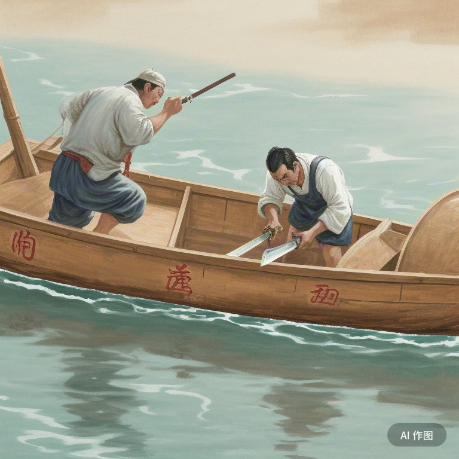

核舟求剑
- 画面中心是一条蜿蜒的河流，河水清澈见底，波光粼粼。
- 河面上，一艘木船静静地漂浮着，船身雕刻精美，古色古香。
- 船舷一侧，有一个古人打扮的人物，他身穿长袍，头戴冠帽，正手持一把锋利的剑。
- 人物的脸上露出焦急和困惑的表情，他似乎在寻找着什么。
- 在船舷的一侧，有一个清晰的刻痕，旁边散落着一些木屑，显然是刚刚刻上去的。
- 人物的目光紧紧盯着水面，水面上隐约可见剑的倒影，似乎在寻找剑的确切位置。
- 画面的背景是一片茂密的竹林，竹叶随风轻轻摇曳，营造出一种宁静而又急迫的氛围。
- 在画面的一角，有一行小字，写着“核舟求剑，不亦惑乎？”，提醒着观者这个故事的寓意。

这是根据成语“核舟求剑”生成的画面。画面中，一个古人在船上刻下记号，试图找回掉入水中的剑，体现了一个执着于错误方法的形象。